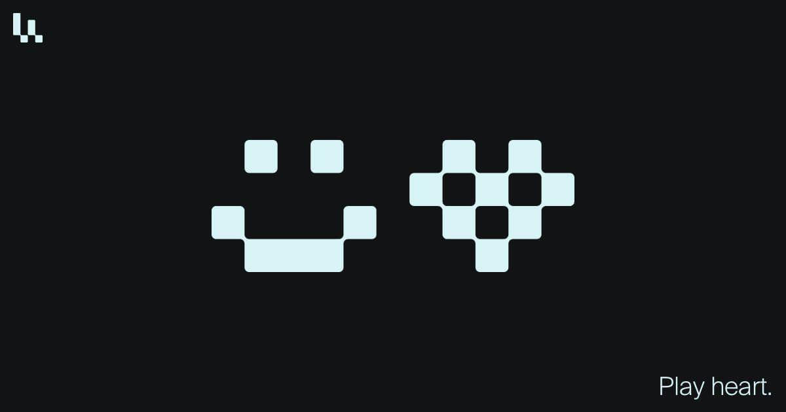
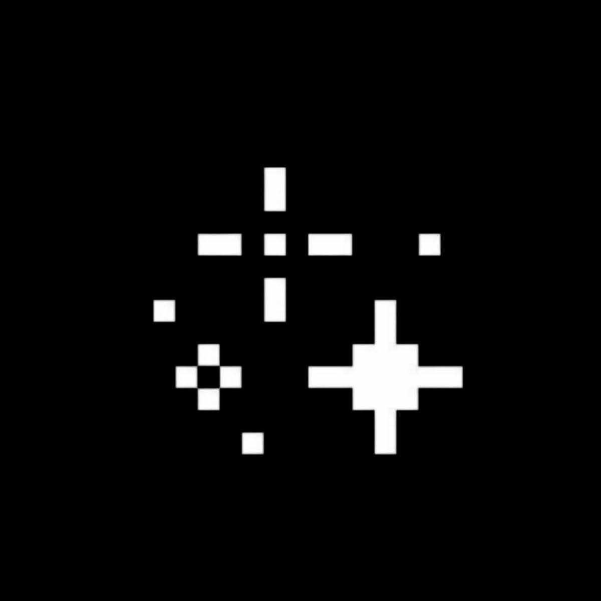
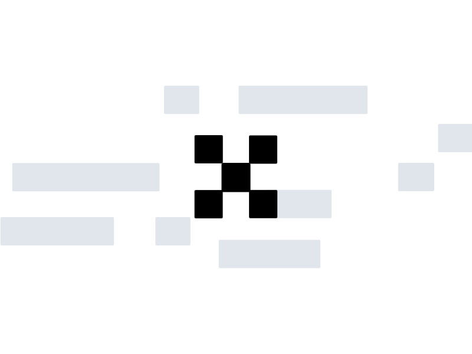
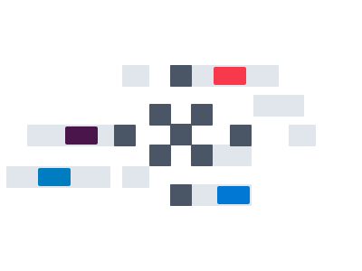
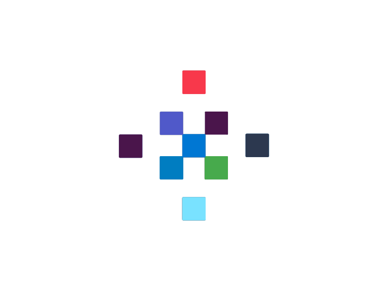
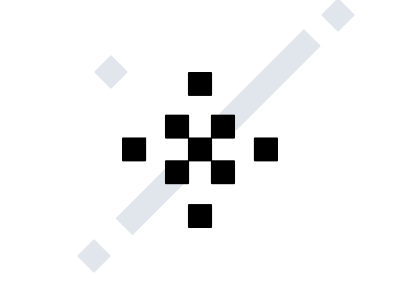
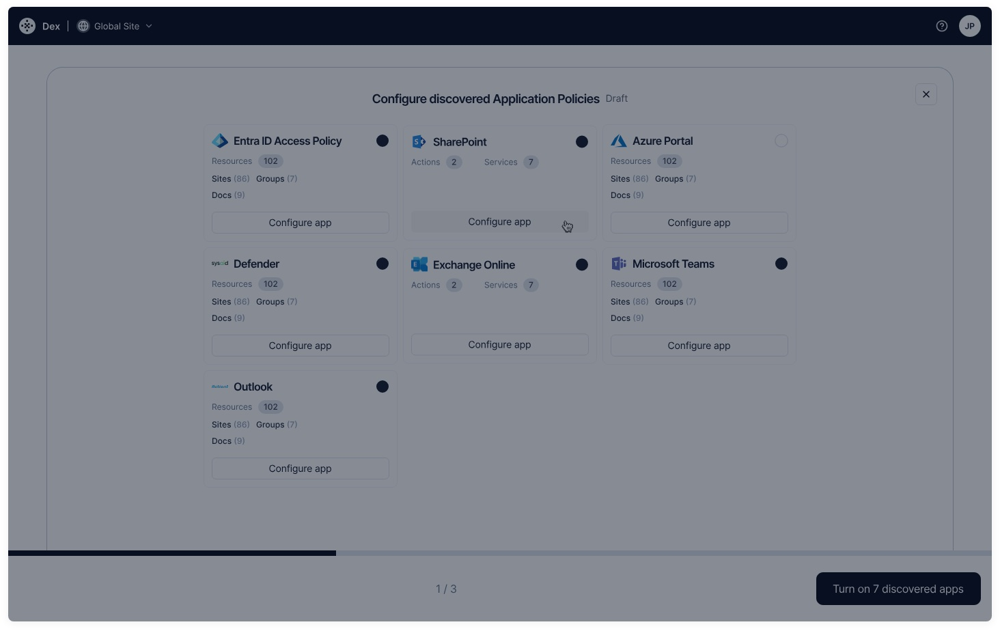
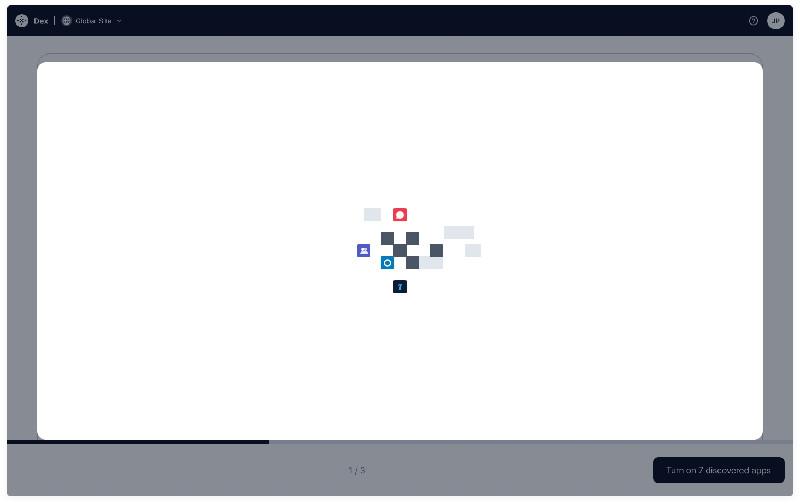
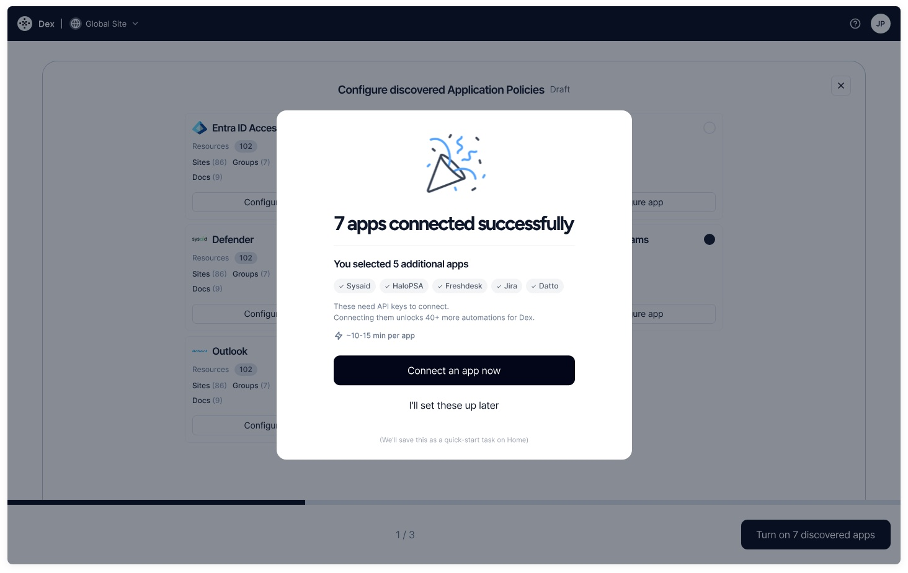

Dex Loader
Dex is an AI agent that handles IT support and admin work in Microsoft 365. When a company connects it, Dex spends a few minutes discovering their IT environment. I designed the loader for that wait, built from the Dex logo, and a tiny version of it for the chat.
- Client
- Dex
- Role
- Motion design
- Scope
- Logo loader · chat loader
- Year
- 2026
The brief
Discovery runs while the user waits in onboarding, so the loader is one of the first things people see in Dex. The team wanted it to come from the logo, plus a second version small enough to sit next to a line of text in the chat.
The Dex logo is made of square blocks, so I looked at pixel art and 8-bit interfaces, where motion moves in clear steps instead of smooth glides.


References
The logo loader
The loader takes the Dex logo apart and puts it back together. A single block splits along a diagonal, the blocks assemble into the logo, and then they turn into app icons one at a time while discovery runs. At the end the logo turns black again and collapses back to one block, so the loop has no visible seam.
It runs at 12 frames per second, so the blocks move in visible steps, like pixel art. Each block holds still, then snaps to its next position.

Frames 0–9One block splits
Frames 10–23The logo assembles
Frames 24–85Colour streams in
Frames 86–97Full colour
Frames 98–109Back to one blockThe chat loader
A second version for the chat, small enough to sit next to a line of text. It does the same thing with nine blocks on an 8 by 8 pixel canvas, so it still reads at the size of a letter.
| Spec | Value |
|---|---|
| frame rate | 12 fps |
| easing | cubic-bezier(1, 0, 0, 1) · hold, then snap |
| logo loader | 600 × 400 · 110 frames · 9.2s loop |
| chat loader | 8 × 8 px · 9 blocks · a move every ~0.46s |
| format | Lottie |
In the product
Recorded in Dex’s onboarding: the logo loader fills the left panel while discovery runs, and the chat loader sits next to “Dexing…”.



Screens from the onboarding flow
Outcome
Dex shipped both loaders in its onboarding. The recordings above are from the product.